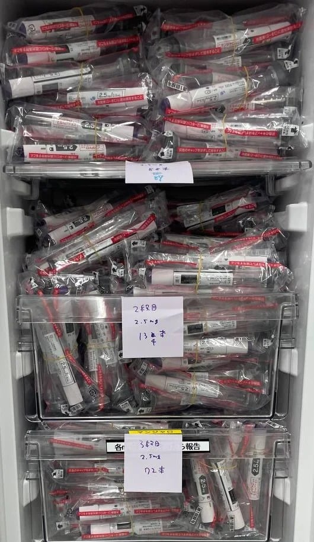
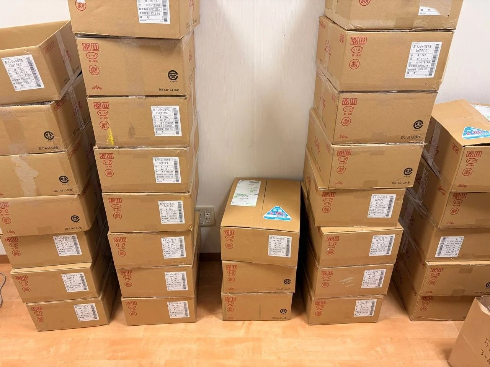

'물량 걱정 하지 마시오 김치맨'


'물량 걱정 하지 마시오 김치맨'
이거 근데 맞으면 효과있긴함?
내 친구들 기본 2달기준 5키로 이상은 빠짐
이거만큼 검증된것도 별로없지?
난 약빨 존나 잘받아서 부작용 1도없이 29kg뺌 105 > 76 첫 두달에 20 가까이 빠졌고 6개월차 까지 천천히 빠진듯
위고비는 솔직히 효과못봤는데 마운자로 4달맞고 14키로빠졌음..
저렇게 해서 한국릴리 판매량이 급감해야됨.
최소한 일본까지 가서 사올 메리트가 없는 수준까지 가격을 다운시키게끔 해야됨
신선한 스시에요 ㅋㅋㅋㅋㅋ
역시 스시는 일본
사악한 일본놈들 또 조선인의 지갑을 털어가는구나
장사 잘하시네 ㅋㅋㅋㅋ
신선한 스시 ㅋㅋㅋㅋ 미친 ㅋㅋㅋ
놀랍게도 주말 진료 안보던 병원도 지금 풀영업중임 ㅋㅋㅋ
병원은 처방전(3300엔)+주사값(평균 객당 월 3개월 치 기준 3000엔) = 합 6천엔 이상 마진이라서
존나게 노젓는다고함. 딸깍하고 주면 6만원이라고~